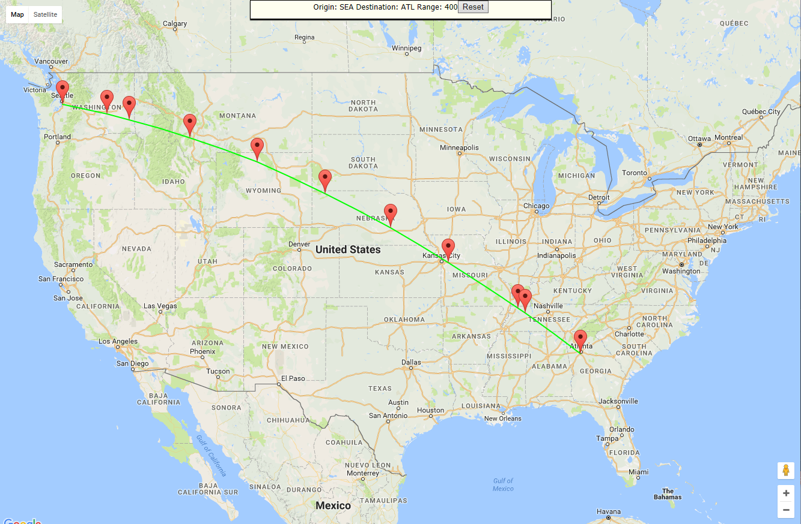
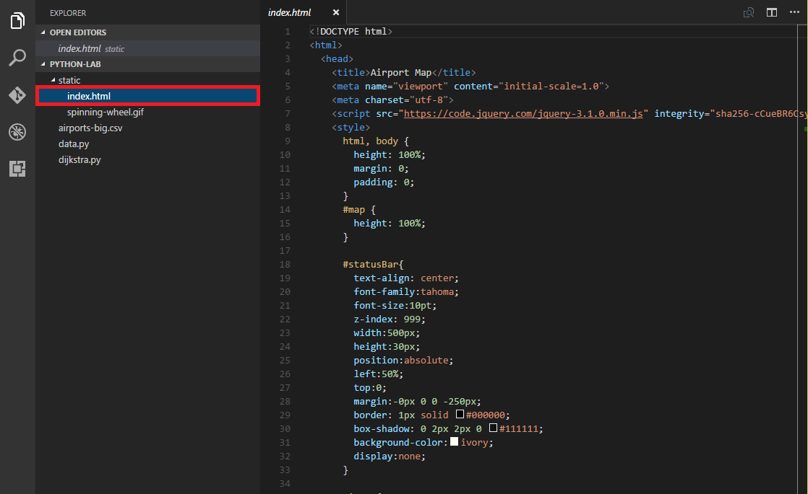
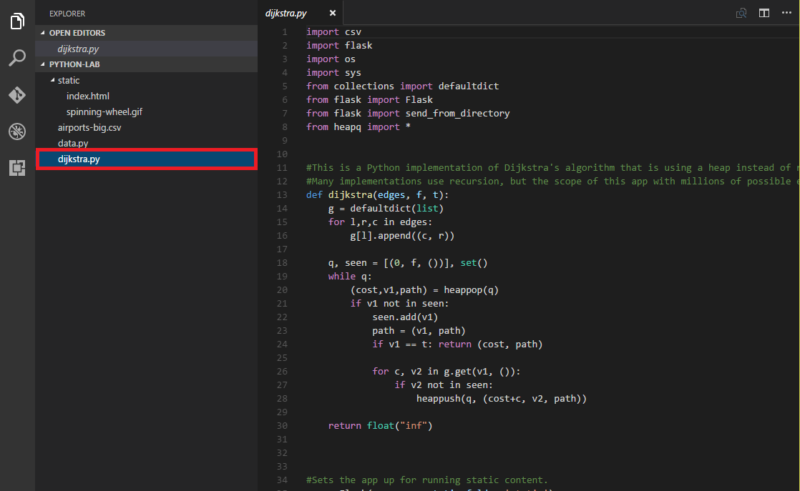
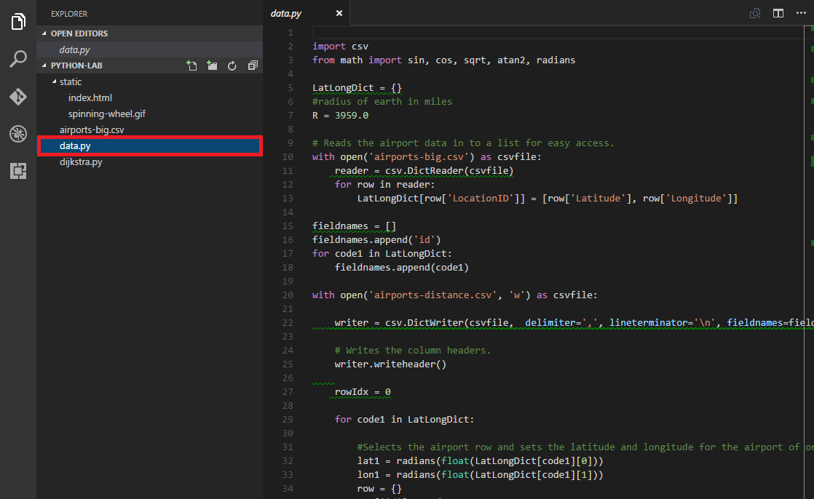
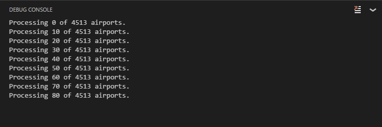
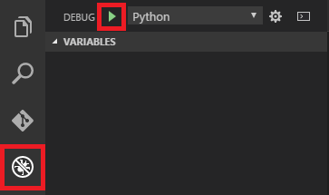
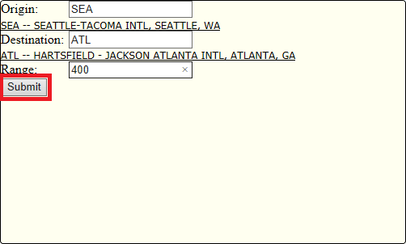
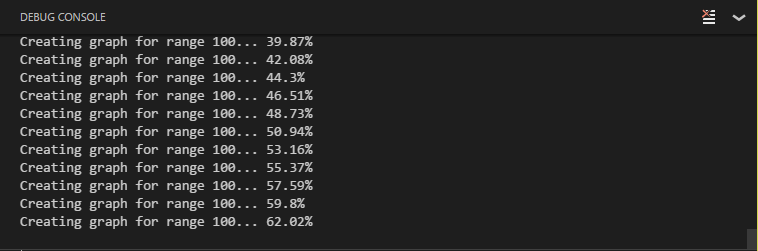

Using Python with Visual Studio Code
Overview
Python is a widely used programming language that is familiar to legions of developers. It features a dynamic type system and automatic memory manangement and is complemented by a comprehensive standard library as well as countless open-source libraries and frameworks, including Django, Pyramid, Flask and Bottle. Python interpreters are freely available for numerous operating systems, enabling Python developers to write apps that run on a variety of platforms. Python enjoys wide support in academia and in the scientific and data-science communities, and is the programming language that powers popular Web sites such as YouTube, DropBox, Survey Monkey, Reddit, and Yahoo Maps.
Python code can be written with any code editor, including Microsoft's free, open-source, and cross-platform code editor, Visual Studio Code. Combined with any of several freely available Python extensions, Visual Studio Code offers a rich environment for writing, testing, and debugging Python code. And it works equally well on Windows, macOS, and Linux.
In this lab, you will use Visual Studio Code to create a Python app that computes the shortest routes between airports. The app, pictured below, runs in a browser and uses a Python back end to perform computations.

Objectives
In this hands-on lab, you will learn how to:
- Configure Visual Studio Code to write and debug Python apps
- Use Visual Studio Code to pull code from GitHub
- Use Python and Flask to serve up Web pages and REST APIs
- Use client-side JavaScript code to call REST APIs implemented in Python
Prerequisites
The following are required to complete this hands-on lab:
Exercises
This hands-on lab includes the following exercises:
Estimated time to complete this lab: 30 minutes.
Exercise 1: Set up the environment
Setting up Visual Studio Code to do Python development is fairly straightforward. It involves installing Python, installing Visual Studio Code, and then installing one or more Python extensions for Visual Studio Code. In this exercise, you will configure your environment for doing Python development with Visual Studio Code.
-
Visit https://www.python.org/downloads/ and download the installer for Python 3 for your operating system. Then run the installer to install Python 3. If the installer offers an option for including Python in your PATH, be sure to select this option.

Installing Python
-
Visit https://code.visualstudio.com/download and download and install Visual Studio Code.
-
Create a directory named "PythonLab" in the location on your choice to serve as the project directory.
-
Start Visual Studio Code and use the File -> Open Folder command (on a Mac, File -> Open) to open the folder you created in the previous step.
-
Click the Extensions button in the ribbon on the left side of Visual Studio Code. Type "python" (without quotation marks) into the search box, and then click the Install button for the Python extension by Don Jayamanne.

Installing the Python extension
-
Once the extension is installed, click the Reload button that appears where the Install button appeared before.
-
Use the File -> New File command to create a new file. Then add the following line of Python code to the file:
print("Hello World")
-
Use the File -> Save command to save the file, and name it "test.py." If Visual Studio Code displays an error message saying "Linter pylint is not installed," click Install pylint to install pylint.
pylint is a popular linting tool for Python. Visual Studio Code uses it to check for common programming errors in your code.

Installing pylint
-
Click the Debug button in the ribbon on the left. Then click the gear icon and select Python from the drop-down list that appears. Visual Studio Code responds by adding a file named launch.json to the project containing configuration information for Python projects.

Adding launch.json
-
Click test.py to make it the current file in the editor. Then click the Start Debugging button (the green arrow) to run the app.
If you are running Windows and see a dialog warning you that "Windows Firewall has blocked some features of this app," click the Allow access button.

Running the app in the debugger
-
The app will start and the debugger will break at the first (and only) line. Click the Continue button (the green arrow) to continue executing the app.

Continuing in the debugger
-
Confirm that the output "Hello World" appears in the debug console.

Output from test.py
Now that Python is installed and Visual Studio Code is configured to run Python apps, you are ready to build and test more sophisticated apps. In the next exercise, you will download an app from GitHub, inspect it in Visual Studio Code, and run a Python script included with the app to generate a data file that the app relies on.
Exercise 2: Download an app and prepare the data
Visual Studio Code has integrated support for Git and GitHub, which makes it easy to pull projects from GitHub and work on them locally. In this exercise, you will download an app from GitHub. The app consists of two parts: a client half written in HTML and JavaScript, and a server half written in Python. The server-side code uses a lightweight Web framework called Flask to serve up Web pages and expose REST APIs. Flask contains an integrated HTTP server and uses decorators in the code to route HTTP requests to methods in the application.
The Python code that runs on the server implements Dijkstra's algorithm, which computes the shortest distance between two nodes on a weighted graph. Given airport codes denoting an origin and a destination and a range specifying the maximum length of each flight, the app uses a weighted graph constructed in memory from a distance table similar to the one below to determine the shortest route between airports. The distance table stores the distances between more than 4,500 airports in the United States. The table isn't provided with the app (it is quite large; more than 140 MB!), but is generated with a Python script before the app is run for the first time. That script is included in the GitHub repo along with the code for the app itself.

Table denoting distances between airports
-
If Git isn't installed on your computer, go to https://git-scm.com/download and install it now.
One way to determine whether Git is installed is to open a terminal window or Command Prompt window and execute a git command.
-
In Visual Studio Code, use the View -> Integrated Terminal command to open a TERMINAL window. Then execute a cd command in the TERMINAL window to navigate to the directory where you would like the project you download from GitHub to be stored.
-
Execute the following command in the TERMINAL window to clone a GitHub repository:
git clone https://github.com/theonemule/python-lab/
This will create a directory named "python-lab" containing source-code files pulled from repo in the current directory.
-
Use the File -> Open Folder command (on a Mac, File -> Open) to open the "python-lab" folder created in the previous step.
-
Expand the "static" folder in EXPLORER and click index.html to open index.html in the editor. Take a moment to examine its contents. This is the Web front-end for the application. When it loads into a browser, it creates a Google map in the <div> whose id is "map." The API for creating and manipulating the map comes from https://maps.googleapis.com/maps/api/js, which is loaded with a <script> element near the bottom of the file.

Examining index.html
-
Click dijkstra.py to open dijkstra.py in the editor. Take a moment to examine the code inside. This is the server-side code that uses Dijkstra's algorithm to compute the shortest path between two points given a set of intermediate points representing possible waypoints. It exposes this functionality through a REST API backed by Flask.

Examining dijkstra.py
-
Click data.py to open data.py in the editor. This is the Python script that creates the distance table that the app uses to create a weighted graph. The raw data comes from the data file airports-big.csv, which contains information on more than 4,500 U.S. airports, including their latitudes and longitudes. data.py reads this data and generates a separate (and much larger) file named airports-distance.csv containing the distance table.

Examining data.py
-
Click the Debug button in the ribbon on the left. Then click the gear icon and select Python from the drop-down list.
Configuring the environment for Python
-
Return to data.py in the editor. Run it by clicking the Start Debugging button (the green arrow).
Running the app in the debugger
-
When the debugger breaks on the first line of code, click the Continue button (the green arrow).

Continuing in the debugger
-
Watch the debug console for output. The script will take several minutes to run, given that it is CPU-intensive and it's calculating more 20 million distances!

Output from data.py
With the code loaded into Visual Studio Code and the distance table prepared, the next task is to run the app and put Dijkstra's algorithm to work finding the shortest distance between airports.
Exercise 3: Run the app
Before you can run the app, you need to install Flask. You can do that from inside Visual Studio Code using the integrated terminal. In this exercise, you will install Flask, and then run the app in a browser and use it to compute optimal routes between airports.
-
Use Visual Studio Code's View -> Integrated Terminal command to open an INTEGRATED TERMINAL window.
-
Execute the following command in the INTEGRATED TERMINAL to install Flask.
pip3 install flask
-
Select dijkstra.py to make it the currently selected file. Then click the Debug button in the ribbon on the left, and click the Start Debugging button.

Running the app in the debugger
-
When the debugger breaks on the first line, click the Continue button.

Continuing in the debugger
-
Open a browser and navigate to http://127.0.0.1:5000/index.html.
-
Type "SEA" (without quotation marks) into the Origin field, "ATL" into the Destination field, and "400" into the Range field. Then click the Submit button to compute the best route from Seattle (SEA) to Atlanta (ATL) in a plane that has a 400-mile range.

Computing a route
-
After a couple of minutes, the best route will appear on the map.
Best route from SEA to ATL
-
Click the Reset button and try computing additional routes using different origins, destinations, and ranges. You can choose from more than 4,500 different airport codes. You can bring up the debug console in Visual Studio Code while a computation runs to see how it's progressing.

Monitoring the progress of a computation
-
When you are finished experimenting, click the Stop button in the debugging toolbar to stop the application. Anytime you wish to fire it up again, simply start dijkstra.py in the debugger and open your browser to http://127.0.0.1:5000/index.html.

Stopping the debugger
Summary
Visual Studio Code provides a great platform for writing, running, and debugging Python apps. It runs on Windows, macOS, and Linux, and it can be downloaded for free for any of these operating systems. In this lab, you downloaded and ran a non-trivial Python app that uses Flask to project an HTML front end and expose a Python API on the back end. Use this app as a model for apps of your own, and experiment with some of the different Python extensions available for Visual Studio Code.
Copyright 2016 Microsoft Corporation. All rights reserved. Except where otherwise noted, these materials are licensed under the terms of the MIT License. You may use them according to the license as is most appropriate for your project. The terms of this license can be found at https://opensource.org/licenses/MIT.